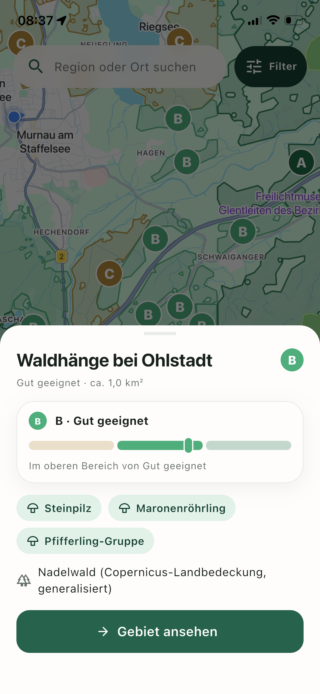
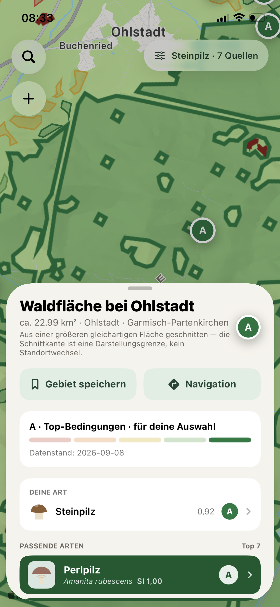
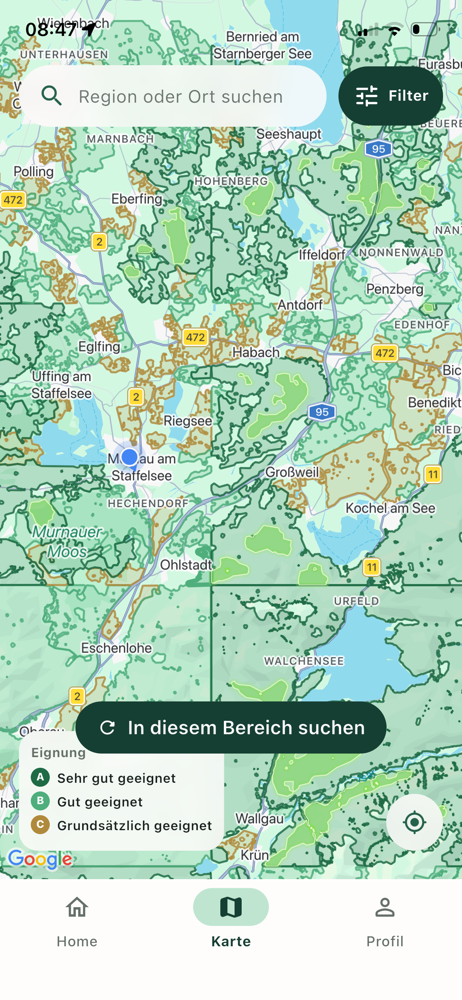
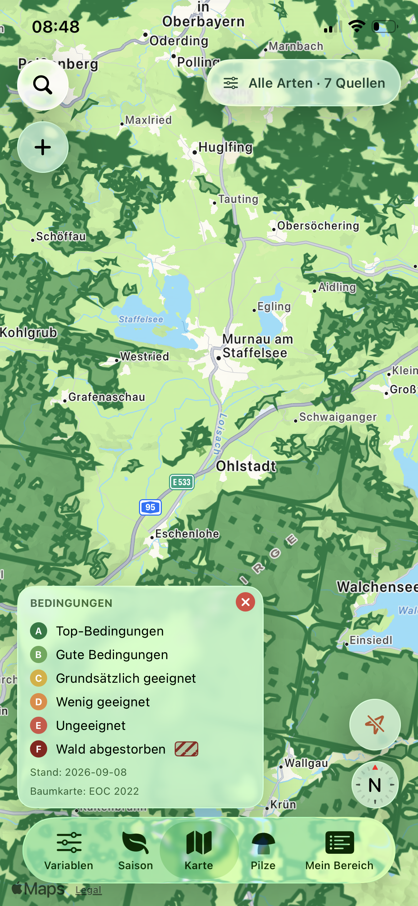
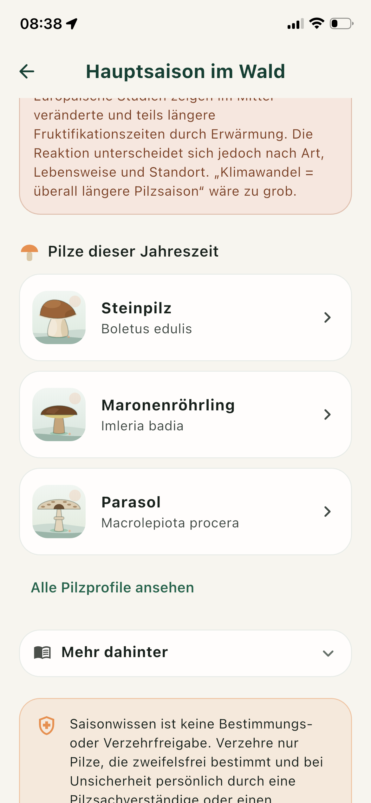
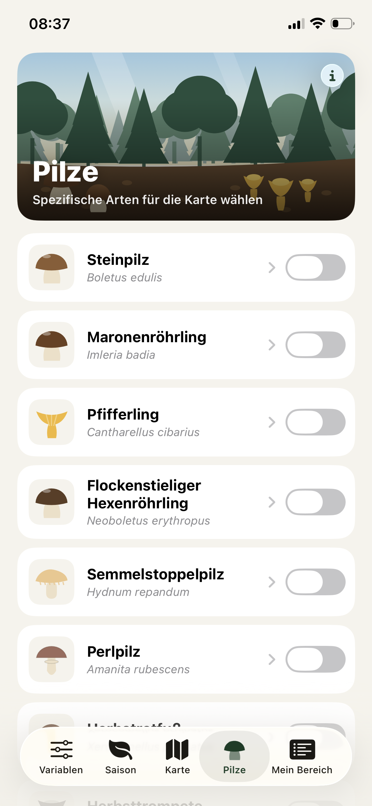
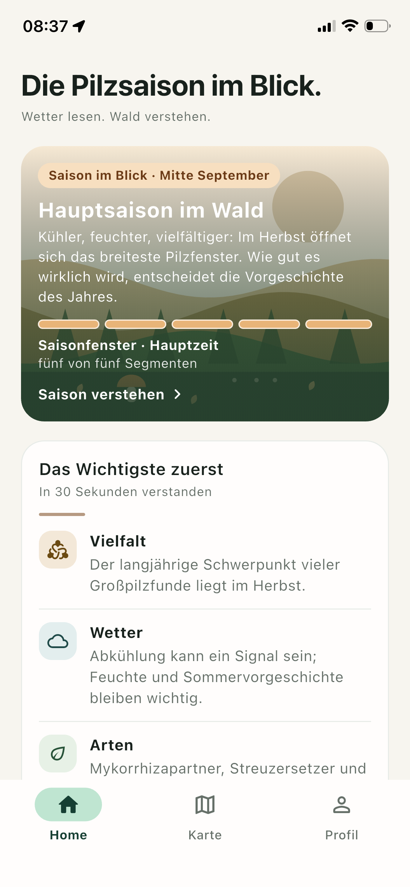
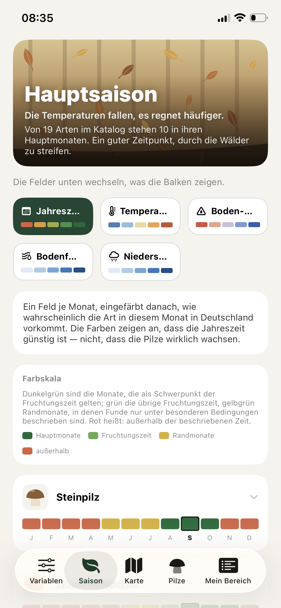

Screenshot comparison
Screenshot comparison submitted in support of an App Review Guideline 4.1 report. The comparison focuses on product structure, functional organization and user flow.
Pilzgebiete on the left · Mykotop on the right. Screenshots are shown unaltered. On narrow screens, swipe each pair horizontally. Select any screenshot to open its full-resolution image.
1. Area selection and detail flow
{kind=link}

{kind=link}

Both selected-area views place a named forest area, a suitability grade, species information and further actions in a sheet over the map.
2. Classified forest-area map
{kind=link}

{kind=link}

Both maps show coloured forest polygons around Murnau and Ohlstadt with a letter-based suitability legend.
3. Mushroom species lists
{kind=link}

{kind=link}

Both screens present illustrated mushroom-species lists with common and scientific names and arrows leading to further details.
{kind=link}
{kind=link}
5. Seasonal information
{kind=link}

{kind=link}

Both season views combine a “Hauptsaison” heading, a forest-themed illustration and colour-coded seasonal indicators.